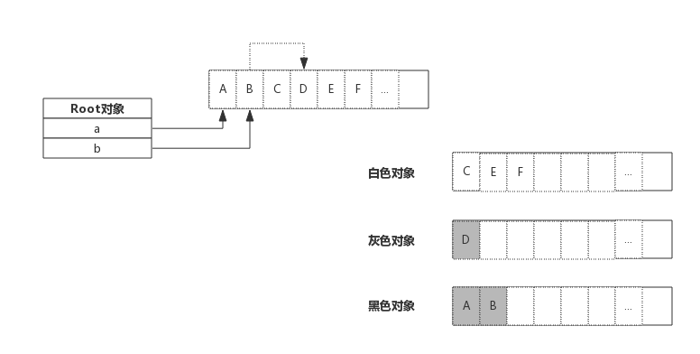

go垃圾回收
搞懂Go垃圾回收
本文主要介绍了垃圾回收的概念，Golang GC的垃圾回收算法和工作原理，看完本文可以让你对Golang垃圾回收机制有个全面的理解。由于本人不了解其他语言的GC，并未对比其他语言的垃圾回收算法，需要的可以自行Google。
什么是垃圾回收
垃圾回收（英语：Garbage Collection，缩写为GC），在计算机科学中是一种自动的存储器管理机制。当一个计算机上的动态存储器不再需要时，就应该予以释放，以让出存储器，这种存储器资源管理，称为垃圾回收。垃圾回收器可以让程序员减轻许多负担，也减少程序员犯错的机会。来自 维基百科
简单地说， 垃圾回收(GC)是在后台运行一个守护线程，它的作用是在监控各个对象的状态，识别并且丢弃不再使用的对象来释放和重用资源。
go的垃圾回收
当前Golang使用的垃圾回收机制是 三色标记发 配合 写屏障 和 辅助GC ，三色标记法是 标记-清除法 的一种增强版本。
标记清除法(mark and sweep)
原始的标记清楚法分为两个步骤：
- 标记。先STP(Stop The World)，暂停整个程序的全部运行线程，将被引用的对象打上标记
- 清除没有被打标机的对象，即回收内存资源，然后恢复运行线程。
这样做有个很大的问题就是要通过STW保证GC期间标记对象的状态不能变化，整个程序都要暂停掉，在外部看来程序就会卡顿。
三色标记法
三色标记法是对标记阶段的改进，原理如下：
- 初始状态所有对象都是白色。
- 从root根出发扫描所有根对象（下图a,b），将他们引用的对象标记为灰色（图中A，B）
那么什么是root呢？ 看了很多文章都没解释这这个概念，在这儿说明下：root区域主要是程序运行到当前时刻的栈和全局数据区域。

- 分析灰色对象是否引用了其他对象。如果没有引用其它对象则将该灰色对象标记为黑色（上图中A）；如果有引用则将它变为黑色的同时将它引用的对象也变为灰色（上图中B引用了D）
- 重复步骤3，直到灰色对象队列为空。此时白色对象即为垃圾，进行回收。
也可以参考下面的动图辅助理解：

Go GC如何工作
上面介绍的是GO GC采用的三色标记算法，但是好像并没有体现出来怎么减少STW对程序的影响呢？其实是因为 Golang GC的大部分处理是和用户代码并行的 。
GC期间用户代码可能会改变某些对象的状态，如何实现GC和用户代码并行呢？先看下GC工作的完整流程：
Mark:
- Mark Prepare: 初始化GC任务，包括开启写屏障(write barrier)和辅助GC(mutator assist)，统计root对象的任务数量等。 这个过程需要STW
- GC Drains: 扫描所有root对象，包括全局指针和goroutine(G)栈上的指针（扫描对应G栈时需停止该G)，将其加入标记队列(灰色队列)，并循环处理灰色队列的对象，直到灰色队列为空。 该过程后台并行执行
Mark Termination: 完成标记工作，重新扫描(re-scan)全局指针和栈。因为Mark和用户程序是并行的，所以在Mark过程中可能会有新的对象分配和指针赋值，这个时候就需要通过写屏障（write barrier）记录下来，re-scan 再检查一下。 这个过程也是会STW的。
Sweep: 按照标记结果回收所有的白色对象， 该过程后台并行执行
Sweep Termination: 对未清扫的span进行清扫, 只有上一轮的GC的清扫工作完成才可以开始新一轮的GC。 如果标记期间用户逻辑改变了刚打完标记的对象的引用状态，怎么办呢？
写屏障(Write Barrier)
写屏障：该屏障之前的写操作和之后的写操作相比，先被系统其它组件感知。 好难懂哦，结合上面GC工作的完整流程就好理解了，就是在每一轮GC开始时会初始化一个叫做“屏障”的东西，然后由它记录第一次scan时各个对象的状态，以便和第二次re-scan进行比对，引用状态变化的对象被标记为灰色以防止丢失，将屏障前后状态未变化对象继续处理。
辅助GC
从上面的GC工作的完整流程可以看出Golang GC实际上把单次暂停时间分散掉了，本来程序执⾏可能是“⽤户代码–>⼤段GC–>⽤户代码”，那么分散以后实际上变成了“⽤户代码–>⼩段 GC–>⽤户代码–>⼩段GC–>⽤户代码”这样。如果GC回收的速度跟不上用户代码分配对象的速度呢？ Go 语⾔如果发现扫描后回收的速度跟不上分配的速度它依然会把⽤户逻辑暂停，⽤户逻辑暂停了以后也就意味着不会有新的对象出现，同时会把⽤户线程抢过来加⼊到垃圾回收⾥⾯加快垃圾回收的速度。这样⼀来原来的并发还是变成了STW，还是得把⽤户线程暂停掉，要不然扫描和回收没完没了了停不下来，因为新分配对象⽐回收快，所以这种东⻄叫做辅助回收。
如何进行GC调优
衡量GC对程序的影响可以参考这篇文章， Go 程序的性能调试问题 。
减少对象的分配，合理重复利用； 避免string与[]byte转化；
两者发生转换的时候，底层数据结结构会进行复制，因此导致 gc 效率会变低。
少量使用+连接 string；
Go里面string是最基础的类型，是一个只读类型，针对他的每一个操作都会创建一个新的string。 如果是少量小文本拼接，用 “+” 就好；如果是大量小文本拼接，用 strings.Join；如果是大量大文本拼接，用 bytes.Buffer。
GC触发条件
自动垃圾回收的触发条件有两个：
- 超过内存大小阈值
- 达到定时时间 阈值是由一个gcpercent的变量控制的,当新分配的内存占已在使用中的内存的比例超过gcprecent时就会触发。比如一次回收完毕后，内存的使用量为5M，那么下次回收的时机则是内存分配达到10M的时候。也就是说，并不是内存分配越多，垃圾回收频率越高。 如果一直达不到内存大小的阈值呢？这个时候GC就会被定时时间触发，比如一直达不到10M，那就定时（默认2min触发一次）触发一次GC保证资源的回收。
最后
虽然Golang有自动垃圾回收机制，但是GC不是万能的，最好还是养成手动回收内存的习惯：比如手动把不再使用的内存释放，把对象置成nil，也可以考虑在合适的时候调用runtime.GC()触发GC。
参考：